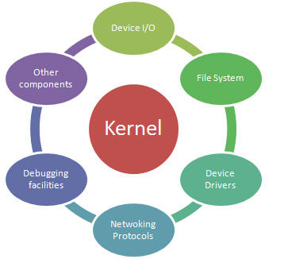
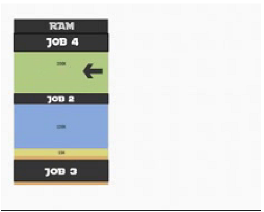
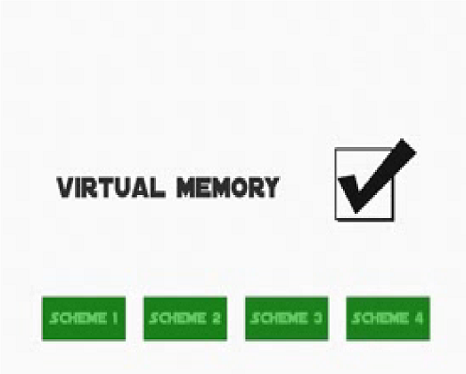

The kernel (also called nucleus) is a computer program that constitutes the central core of a computer's
operating system. It has complete control over everything that occurs in the system. As such, it is the first program loaded
on start up, and then manages the remainder of the start up, as well as input/ output requests from software, translating them into
data processing instruction for the central processing unit. It is also responsible for managing memory, and for managing and communication
with computing peripherals, like printers, speaker, etc. The kernel is a fundamental part of a modern computer's operating system.
The critical code of the kernel is usually loaded into a protected area of memory, which prevents it from being overwritten by other, less frequently used parts of the operating system or by applications. The kernel performs its tasks, such as executing processes and handling interrupts, in kernel space, whereas everything a user normally does, such as writing text in a editor or running programs in a GUI (graphical user interface), is done in user space.
The critical code of the kernel is usually loaded into a protected area of memory, which prevents it from being overwritten by other, less frequently used parts of the operating system or by applications. The kernel performs its tasks, such as executing processes and handling interrupts, in kernel space, whereas everything a user normally does, such as writing text in a editor or running programs in a GUI (graphical user interface), is done in user space.
A file management system is a type of software that manages data files in a computer system. It has limited
capabilities and is designed to manage individual or group files, such as special office documents and records. It may display
report details, like owner, creation date, state of completion and similar features useful in an office environment.
A file management system is also knows as a file manager.
A file management system should not be confused with a file system, which manages all types of data and files in an operating system (OS), or a database management system (DBMS), which has relational database capabilities and includes a programming language for further data manipulation.
A file management system's tracking component is key to the creation and management of this system, where documents containing various stages of processing are shared and interchanged on an ongoing basis.
A file management system is also knows as a file manager.
A file management system should not be confused with a file system, which manages all types of data and files in an operating system (OS), or a database management system (DBMS), which has relational database capabilities and includes a programming language for further data manipulation.
A file management system's tracking component is key to the creation and management of this system, where documents containing various stages of processing are shared and interchanged on an ongoing basis.
Single user mode is a mode in which a multi user computer operating system boots into a single
super user. It is mainly used for maintenance of multi-user environments such as network servers. Some tasks may required exclusive
access to shared resources, for example running fsck on a network share.This mode can also be used for security purposes-network
services are not run, eliminating the possibility of outside interference.On some system a lost super user password can be change
by switching to single user mode, but not asking for the password in such circumstances is viewed as a security vulnerability.
On the previous page we talked about a single user working on their personal computer doing many different
tasks at the same time-effectively, a single user operating system which allows you to multi-task.
Personal computers can multi-task very well, especially for the type of things that most of us want to do, for example, reading emails, writing letters, working on spreadsheets, listening to music, surfing the web and watching videos.
However, there comes a time when only a *really* powerful computer will do the job in hand. For instance
You are an engineer or scientist and want run a forecast
You are a financial person and want to work on thousands of stock market share movements
You work in a bank and want to handle customer accounts.
You are an architect and want to see your full design
You work at an University as an academic along with hundreds of other academics
You are a film animator and want to work in 3D
Personal computers can multi-task very well, especially for the type of things that most of us want to do, for example, reading emails, writing letters, working on spreadsheets, listening to music, surfing the web and watching videos.
However, there comes a time when only a *really* powerful computer will do the job in hand. For instance
You are an engineer or scientist and want run a forecast
You are a financial person and want to work on thousands of stock market share movements
You work in a bank and want to handle customer accounts.
You are an architect and want to see your full design
You work at an University as an academic along with hundreds of other academics
You are a film animator and want to work in 3D
Task management is the process of managing a task through its life cycle. It involves planning,
testing, tracking and reporting. Task management can help either individuals achieve goals, or groups of individuals collaborated
and share knowledge for the accomplishment of collective goals. Tasks are also differentiated by complexity, from low to high.
Effective task management requires managing all aspects of a task, including its status, priority, time, human and financial resources assignments, recurrency, notification and so on. These can be lumped together broadly into the basic activities of task management.
Managing multiple individual or team tasks may require specialised software, for example work flow or project management software, for example work flow or project management software. In fact, many people believe that task management should serve as a foundition for project management activities.
Task management many form part of project management and process management and can serve as the foundation for efficient work flow in an organisation. Project managers adhering to task-oriented management have a detailed and up-to-date project schedule, and are usually good at directing team members and moving the project forward.
Effective task management requires managing all aspects of a task, including its status, priority, time, human and financial resources assignments, recurrency, notification and so on. These can be lumped together broadly into the basic activities of task management.
Managing multiple individual or team tasks may require specialised software, for example work flow or project management software, for example work flow or project management software. In fact, many people believe that task management should serve as a foundition for project management activities.
Task management many form part of project management and process management and can serve as the foundation for efficient work flow in an organisation. Project managers adhering to task-oriented management have a detailed and up-to-date project schedule, and are usually good at directing team members and moving the project forward.
MICROSOFT WINDOWS
Microsoft Windows (or simply Windows) is a meta family of graphic operating system develop, marketed, and sold by Microsoft.It consists of several families of operating system, each of which cater to a certain sector of the computing industry. Active Windows families include Windows NT, Windows Embedded and Windows Phone; these may encompass subfamilies, e.g. Windows Embedded Compact (Windows CE) or Windows Server. Defunct Windows families include Windows 9x; Windows 10 Mobile is an active product, unrelated to the defunct family Windows Mobile.
Microsoft introduced an operating environment named Windows on November 20,1985, as a graphical operating system shell for MS-DOS in response to the growing interest in graphical user interface (GUIs). Microsoft Windows came to dominate the world's personal computer (PC) market with over 90% market share, overtaking Mac OS, which had been introduced in 1984. On PCs, Windows is still the most popular operating system. However, in 2014, Microsoft admitted losing the majority of the overall operating system market to Android, because of the massive growth in sales of android smart phones. In 2014, the number of Windows device sold were less than 25% of android devices sold. This comparisons, however, may not be fully relevant as the two operating system traditionally targeted different platforms.
As of March 2016, the most recent version of Windows for PCs, tablets, smart phones and embedded devices is Windows 10. The most recent versions for server computers is Windows Server 2012 R2. A specialized version of Windows runs on the X box One game console.
Microsoft Windows (or simply Windows) is a meta family of graphic operating system develop, marketed, and sold by Microsoft.It consists of several families of operating system, each of which cater to a certain sector of the computing industry. Active Windows families include Windows NT, Windows Embedded and Windows Phone; these may encompass subfamilies, e.g. Windows Embedded Compact (Windows CE) or Windows Server. Defunct Windows families include Windows 9x; Windows 10 Mobile is an active product, unrelated to the defunct family Windows Mobile.
Microsoft introduced an operating environment named Windows on November 20,1985, as a graphical operating system shell for MS-DOS in response to the growing interest in graphical user interface (GUIs). Microsoft Windows came to dominate the world's personal computer (PC) market with over 90% market share, overtaking Mac OS, which had been introduced in 1984. On PCs, Windows is still the most popular operating system. However, in 2014, Microsoft admitted losing the majority of the overall operating system market to Android, because of the massive growth in sales of android smart phones. In 2014, the number of Windows device sold were less than 25% of android devices sold. This comparisons, however, may not be fully relevant as the two operating system traditionally targeted different platforms.
As of March 2016, the most recent version of Windows for PCs, tablets, smart phones and embedded devices is Windows 10. The most recent versions for server computers is Windows Server 2012 R2. A specialized version of Windows runs on the X box One game console.
Mac OS is a series of graphical user interface-based operating systems developed by
Apple Inc. for their Mac line of computer system.
The original system was first introduced in 1984 as being integral to the original Macintosh, and referred to as the "System". Referred to by its major revision starting with "System 6" and "System 7", Apple rebranded version 7.6 as "Mac OS" as part of their Macintosh clone program in 1996. The Macintosh, specifically its system software, is credited with having popularized the early graphical user interface concept.
There are two architectural legacies of Mac OS. Up to major revision 9, from 1984 to 2000, it is historically known as classic Mac OS. Major version 10, from 2001 to present, was originally branded "Mac OS X", renamed to "OS X" in 2012, and announced to be renamed to "macOS" in the upcoming version macOS Sierra. Both legacies share a general interface design, and there has been some overlap of application frame works for compatibility; but the two system have different origins and use deeply different architectures.
The original system was first introduced in 1984 as being integral to the original Macintosh, and referred to as the "System". Referred to by its major revision starting with "System 6" and "System 7", Apple rebranded version 7.6 as "Mac OS" as part of their Macintosh clone program in 1996. The Macintosh, specifically its system software, is credited with having popularized the early graphical user interface concept.
There are two architectural legacies of Mac OS. Up to major revision 9, from 1984 to 2000, it is historically known as classic Mac OS. Major version 10, from 2001 to present, was originally branded "Mac OS X", renamed to "OS X" in 2012, and announced to be renamed to "macOS" in the upcoming version macOS Sierra. Both legacies share a general interface design, and there has been some overlap of application frame works for compatibility; but the two system have different origins and use deeply different architectures.
The Linux open source operating system, or Linux OS, is a freely distribution, cross-platform operating
system based on Unix that can be installed in PCs, laptops, netbook, mobile and tablet devices, video game consoles, servers,
supercomputers and more.
The Linux OS is frequently package as a Linux distribution for both desktop and serve use, and includes the Linux kernel (the core of the operating system) as well as supporting tools and libraries. Popular Linux OS distribution include Debain, Ubuntu, Fedora,Red Hat and openSUSE.
The Linux OS is frequently package as a Linux distribution for both desktop and serve use, and includes the Linux kernel (the core of the operating system) as well as supporting tools and libraries. Popular Linux OS distribution include Debain, Ubuntu, Fedora,Red Hat and openSUSE.
act of managing computer manage at the Level is to provide ways to dynamically allocate partition of
memory to programs at their request.
handle to all job your system.


that can be handle all file or application that cab on your computer.

the allocate the all devices that Connected into a computer.
Provide the user to share the hardware and software were also control the access to use them.
Scheme 1--------Single User Contiguous -is their only one job

Scheme 2--------Fixed Partition -is their one or more job.

Scheme 3--------Dynamic Solution -to avoid to reboot of a computer every time process to a job.
Scheme 2--------Fixed Partition -is their one or more job.
Scheme 3--------Dynamic Solution -to avoid to reboot of a computer every time process to a job.
-First fit allocation

-best fit allocation
Remove from Memory(is called that deallocation)
-best fit allocation
Remove from Memory(is called that deallocation)
can store the an a program.
Virtual Memory

Paged Memory Allocation

-is allowing divided the jobs to equal size part.
Virtual Memory
Paged Memory Allocation
-is allowing divided the jobs to equal size part.
Can be demand paging.
How to determine replacement of pages
- by using page replacing policy
First In First Out
Least Recently used
Most Recently used
First In First Out
Least Recently used
Most Recently used
CPU-Central Processing Unit
Intervene& Time slicing or priority jobs-presents 2 type of schedulers
2 Types Scheduler
Pre Emptive-it means giving power to interrupt a job.
Non pre emptive- meaning to job can be complete before can do anything.
2 Types Scheduler
Pre Emptive-it means giving power to interrupt a job.
Non pre emptive- meaning to job can be complete before can do anything.
HOLD
READY
RUN
WAIT
FINISH -FCFS (First Come First Serve) non pre emptive -SJN (Shortest Job Next) non pre emptive -(Priority scheduling) non pre emptive
READY
RUN
WAIT
FINISH -FCFS (First Come First Serve) non pre emptive -SJN (Shortest Job Next) non pre emptive -(Priority scheduling) non pre emptive
FINITE NUMBER RESOURCES
REASSIGN JOBS
QUICK RESPONSES
REASSIGN JOBS
QUICK RESPONSES

4 Basic Function
Status of each device
Enforces policies
Allocation
Deallocation
Status of each device
Enforces policies
Allocation
Deallocation
SHARE DEVICE-assigned to multi-purpose process.
VIRTUAL DEVICE-combination of dedicated and shared device.
DEDICATED DEVICE-process at the 1 time.
SPOOLER-CONTROL THE PROGRAM
=DIRECT ACCESS STORAGE= READ---------Write
VIRTUAL DEVICE-combination of dedicated and shared device.
DEDICATED DEVICE-process at the 1 time.
SPOOLER-CONTROL THE PROGRAM
=DIRECT ACCESS STORAGE= READ---------Write
Fixes head magnetic disk storage
Moveable head magnetic disk
Hard disk
Moveable head magnetic disk
Hard disk
Electrical
Erasable
Programmable
Erasable
Programmable
<
COMPLEX JOB
Is a physical components
Information resources
Policies
It has keep track each file restored
Use a policy determined
Allocate each files and deallocated when use turned it to storage.